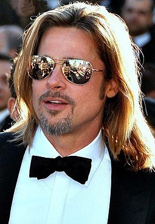

Established actor (2009–present)
Pitt's next leading role came in 2009 with the Quentin Tarantino-directed war film Inglourious Basterds, which premiered at the 2009 Cannes Film Festival.[118] Pitt played Lieutenant Aldo Raine, an American resistance fighter battling Nazis in German-occupied France.[119] The film was a box office hit, taking $311 million worldwide,[32] and garnered generally favorable reviews.[120] The film received multiple awards and nominations, including eight Academy Award nominations and seven MTV Movie Award nominations, including Best Male Performance for Pitt.[121][122] He next voiced the superhero character Metro Man in the 2010 animated feature Megamind.[123] Pitt produced and appeared in Terrence Malick's experimental drama The Tree of Life, co-starring Sean Penn, which won the Palme d'Or at the 2011 Cannes Film Festival.[124] In a performance that attracted strong praise, he portrayed the Oakland Athletics general manager Billy Beane in the drama Moneyball, which is based on the 2003 book of the same name written by Michael Lewis.[125] Moneyball received six Academy Award nominations including Best Picture and Best Actor for Pitt.[126]
wikipedia 